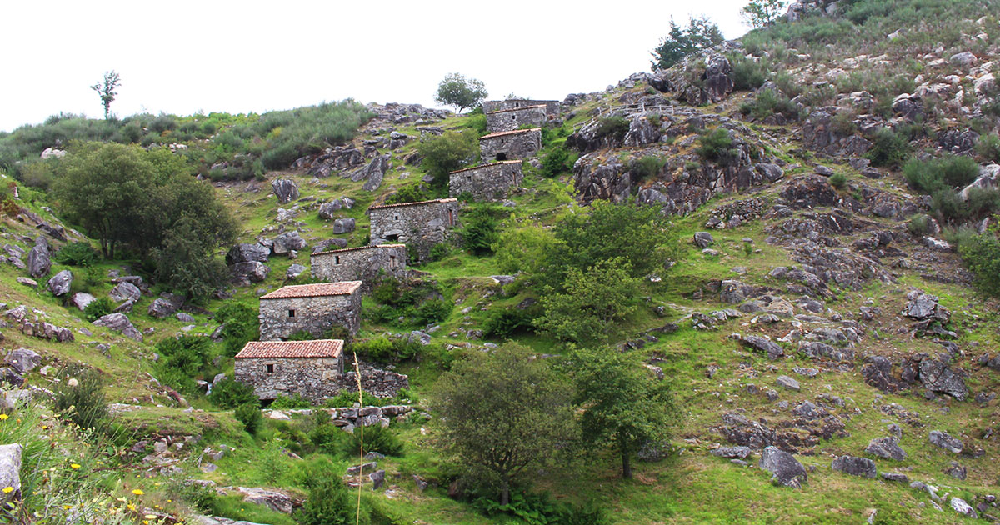
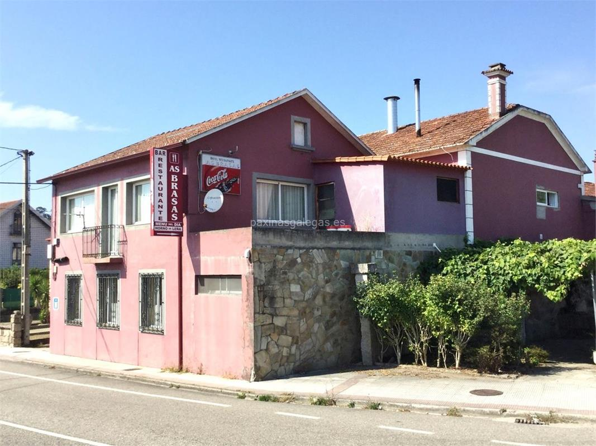
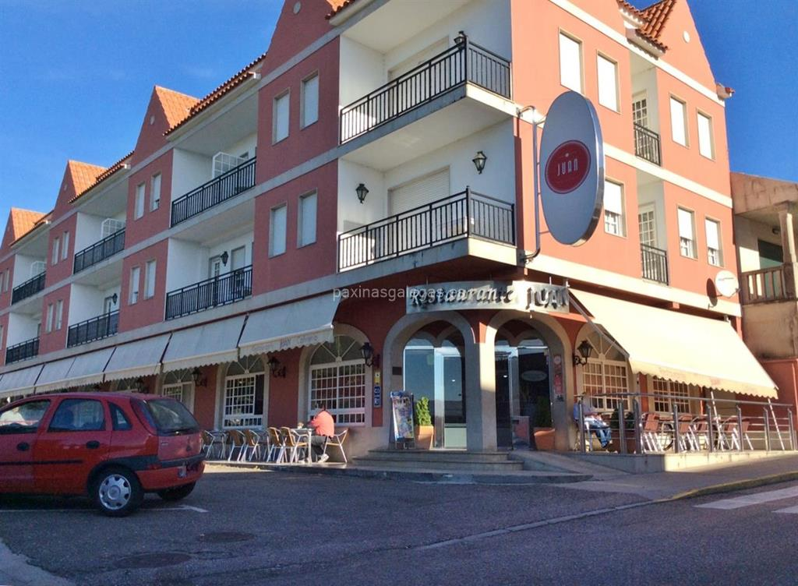

Estas construcciones, situadas dentro de este municipio de hermoso y fragante nombre, se asientan en unas laderas que sirven de magnífico mirador sobre O Rosal.
Los molinos destacan por la imponente maravilla de ingeniería tradicional que muestran, así como polo suyo aparentemente frágil equilibrio sobre las costas donde se encuentran. Además su entorno, cuidado con esmero, permite ver multitud de especies vegetales especialmente favorecidas por la bonanza del microclima de la zona.
En la búsqueda de los antiguos sonidos de las "moas" y de los "rodicios", los caminantes podrán conseguir, desde las alturas, unas magníficas vistas de singular belleza sobre el monte Santa Tegra y sobre el Miño.
El principal objetivo de Bodegas Terras Gauda es la elaboración de vinos singulares de máxima calidad y con personalidad propia , dentro de la DO Rías Baixas. Impulsamos no sólo las visitas a la bodega sino, en general, todas las experiencias derivadas del turismo enológico y gastronómico en este paraje privilegiado donde nos encontramos, tan cerca de la desembocadura del Río Miño.
Cafetería, restaurante. Menú del día, pizzas en horno de leña. Disponemos de servicio wifi y terraza para los clientes. Hacemos comida por encargo y para llevar. Se acepta el pago con tarjeta y tenemos acceso a personas con movilidad reducida.
Los mejores platos de la cocina gallega e internacional. El lugar ideal para celebrar bodas, banquetes, comuniones, comidas de empresa... Dispone de terraza, aparcamiento, wifi y acepta el pago con tarjeta
